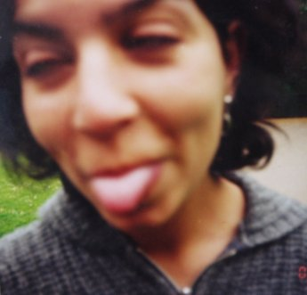

[TOP] Jose Quesada, random-silly-pic-001, (in preparation*), Oil on canvas, 30 x 30 cm, 12 x 12 inch
I don't know the person on the picture, nor the photographer, it is simply a really bad photo with no artistic pretensions. Transforming this subject into an artistic object (classical oil-on-canvas) transmits the ideas that the theme is not important, anything is "paintable". My idea is to collect several amateur pictures, possibly online, and use convert them into paintings.